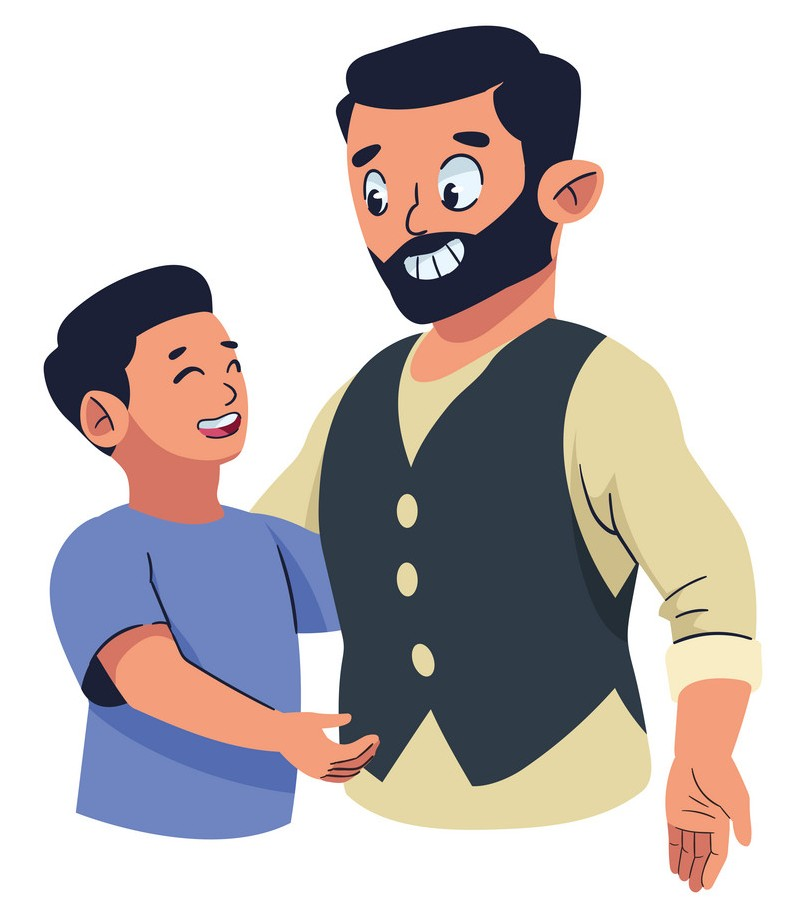

One sunny afternoon, a father decided to teach his young son about the danger of alcohol. He set up a little experiment to illustrate his point. He took two worms and placed one in a glass of crystal-clear water and the other in a glass filled with whiskey.
As the minutes passed, the worm in the water wriggled happily, thriving in its refreshing environment. Meanwhile, the poor worm in the whiskey struggled, curled up, and eventually died.
Turning to his son, the father asked, “What did you learn from this?”
The boy thought for a moment before replying with a grin, “It tells me that if you drink alcohol, you won’t have to worry about worms!”
